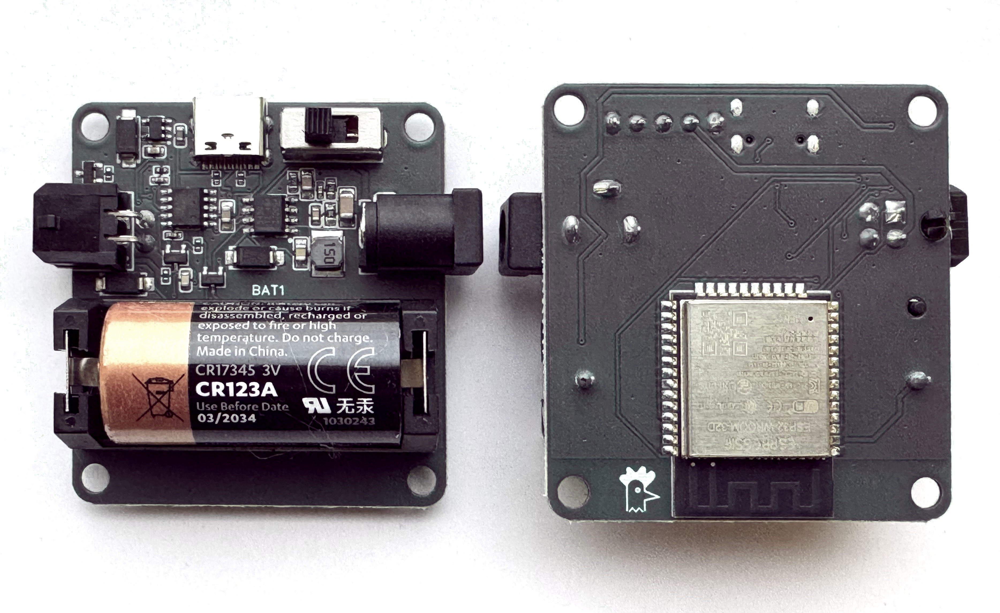
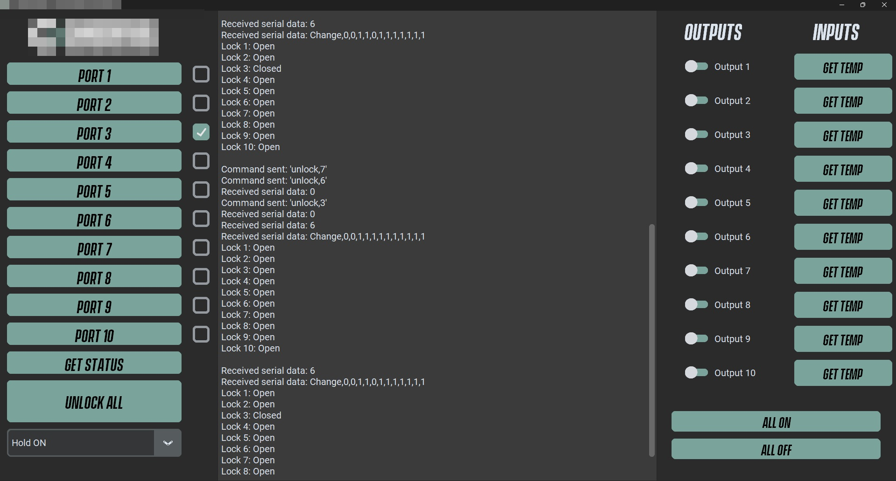

Projects
Intelligent Drive Unit for Locking System
I designed the PCB and firmware for an advanced locking system. It used various sensors, including Hall effect sensors and detector switches, to control a geared motor, ensuring precise locking position control and secure status feedback.
The unit provided logic-level feedback and a photo relay output, making it compatible with third-party systems. It could receive commands via high/low signals or serial communication.
While the PCB was housed in a larger enclosure, my focus was on electronics and firmware. I also developed a system for in-field reprogramming using one-wire UPDI and a USB-C flashing tool, allowing users to update firmware easily.
This system has been deployed in industries like vending machines and DNA sampling kiosks, proving its adaptability and reliability.
Patented Motorised Rotary Latch
I played a key role in this project, leading the mechanical design, prototyping, testing,
DFM, and full-scale production of all components.
This included plastic injection moulded parts, sheet metal, die-cast, and turned components,
ensuring a highly durable and manufacturable solution.
Alongside the mechanical work, I also designed the PCB and firmware,
ensuring seamless integration with the system.
With custom firmware, auto-relock, and soft closure features,
this latch sets a new standard for secure, durable, and adaptable locking solutions.

Wireless & BLE Control Node

This wireless and BLE-enabled control node provides secure, remote access control
without the need for hardwiring. It can operate as a standalone controller
or as part of a mesh system, relaying control and feedback messages securely.
Designed for low-power operation, it can run on an internal battery
and supports Wi-Fi, Bluetooth, and encrypted communication.
USB & Network Control Demonstration Tool

I developed a standalone desktop application to provide a user-friendly interface
for demonstrating and testing a USB and network-controlled device.
Previously, demonstrations were done manually through serial commands in Tera Term,
which was inefficient and difficult for non-technical users.
This tool was designed to streamline the process, making it easy for customers testing samples
and sales teams showcasing the product.
Key Features
- Graphical Interface: Built using Tkinter and CustomTkinter for a clean, dark-themed UI.
- Serial Communication: Automatically detects and connects to the correct USB device.
- Real-Time Logging: Displays sent commands and received responses in a live feed.
- Toggle Controls: Provides easy ON/OFF buttons for controlling device outputs.
- Dropdown Commands: Allows quick selection of functions like lock/unlock, relock settings,
temperature monitoring, and relay control.
- Multi-Device Support: Can communicate with multiple locks over a network or USB,
enabling bulk control of devices.
- Scalability: Designed for future expansion, allowing additional devices and features
to be added without requiring major rewrites.
Development & Deployment
- Fully compiled as an EXE for easy distribution to customers and sales teams.
- Trained internal teams to use the tool effectively.
- Significantly reduced onboarding time for customers testing the product.
This application transformed the way the product was demonstrated,
making it more professional, efficient, and accessible.